Thérapie par l'Art — Enfants
Éco-art thérapie, activités de vacances et engagement des jeunes ambassadeurs de la paix, en partenariat avec l'Association des Arts Thérapeutes et Praticiens Holistiques de Côte d'Ivoire (AATHCI).
L'art et la nature au service de l'enfance
La Thérapie par l'Art pour enfants s'appuie sur des activités d'éco-art thérapie : des ateliers créatifs qui relient l'expression artistique des enfants à leur environnement naturel, dans une démarche à la fois thérapeutique et écologique.
Ce programme se déploie aussi à travers des activités de vacances, permettant aux enfants de vivre ces expériences créatives pendant les périodes de congés scolaires.
AATHCI
Ce programme est mené en partenariat avec l'Association des Arts Thérapeutes et Praticiens Holistiques de Côte d'Ivoire (AATHCI), qui accompagne et accrédite les initiatives d'art-thérapie de l'Académie.
Kassy Stéphanie
Élève de terminale, Kassy Stéphanie est modèle d'ivoirienne et porte-parole des Ambassadeurs de la Paix Junior — un visage concret de l'engagement des jeunes dans ce programme.
Les enfants en atelier d'éco-art thérapie
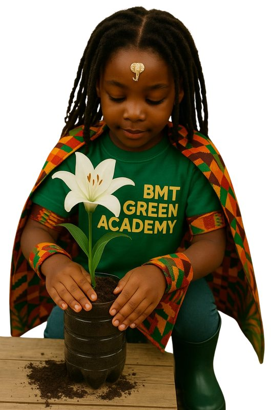
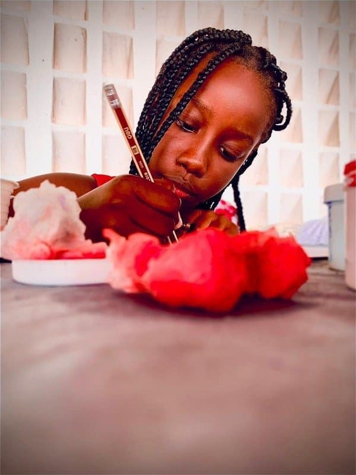
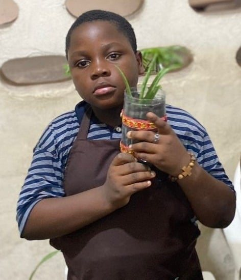
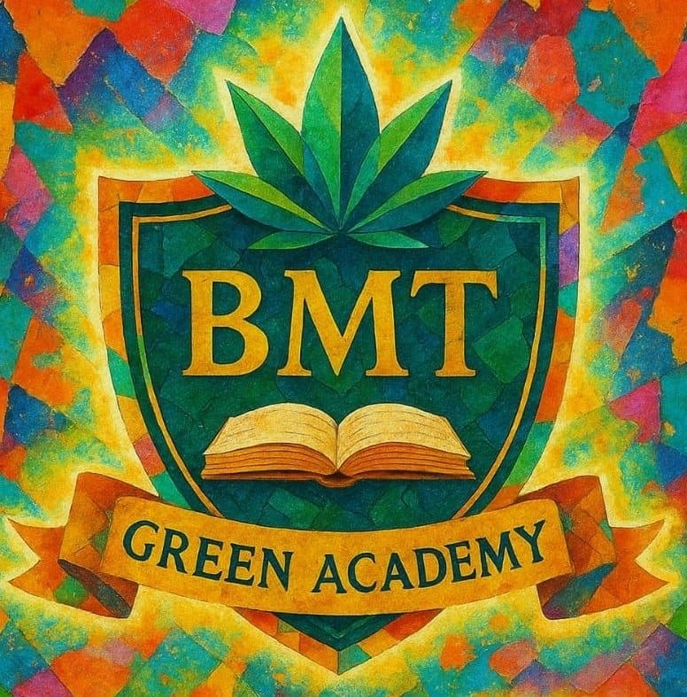
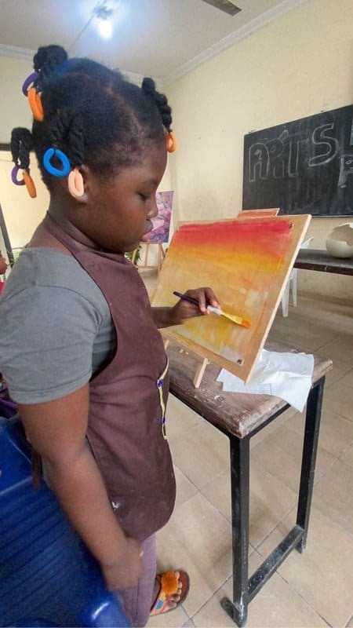
Les autres publics de la Thérapie par l'Art
Thérapie par l'Art — Adultes
L'art comme espace d'expression et d'accompagnement pour les adultes.
Découvrir →Thérapie par l'Art — Personnes en situation de handicap
Un accompagnement en lien avec le Pôle VIII — Sport, handicap & performance.
Découvrir →Un atelier en images
Éco-art, ateliers et Ambassadeurs juniors
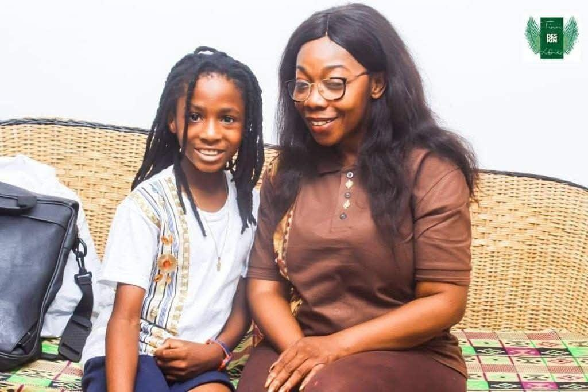
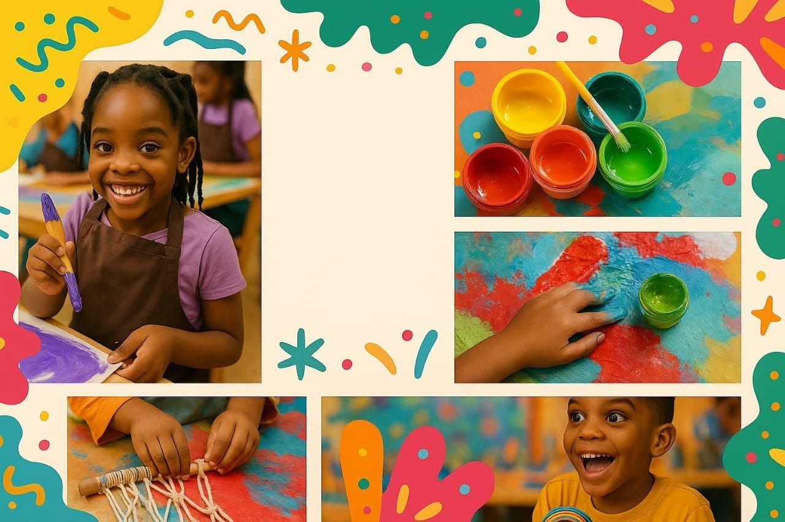
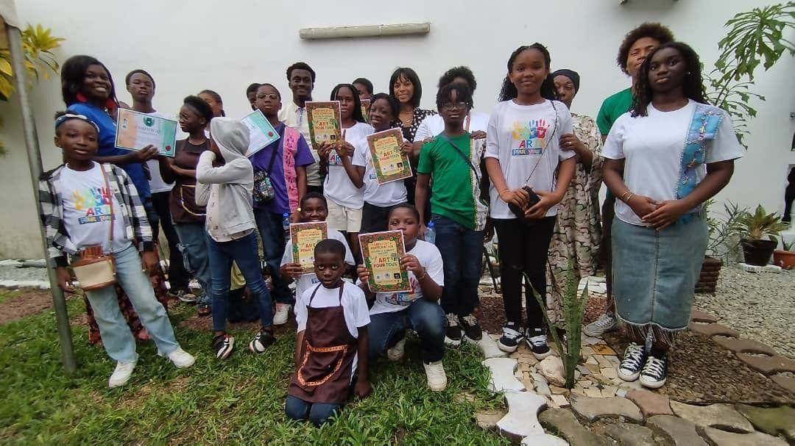
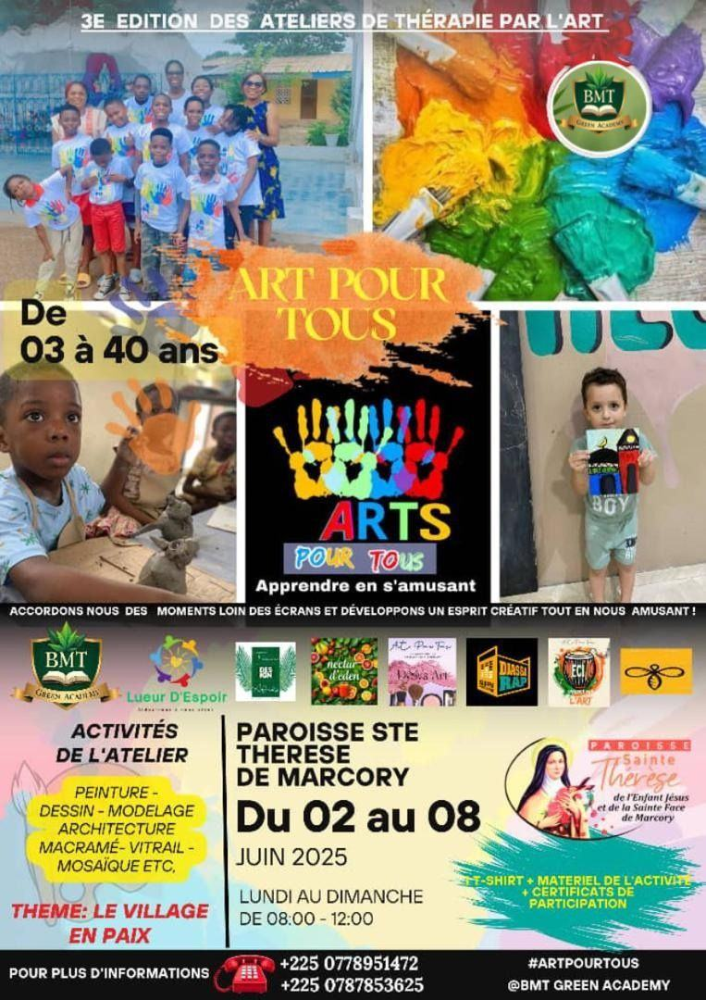
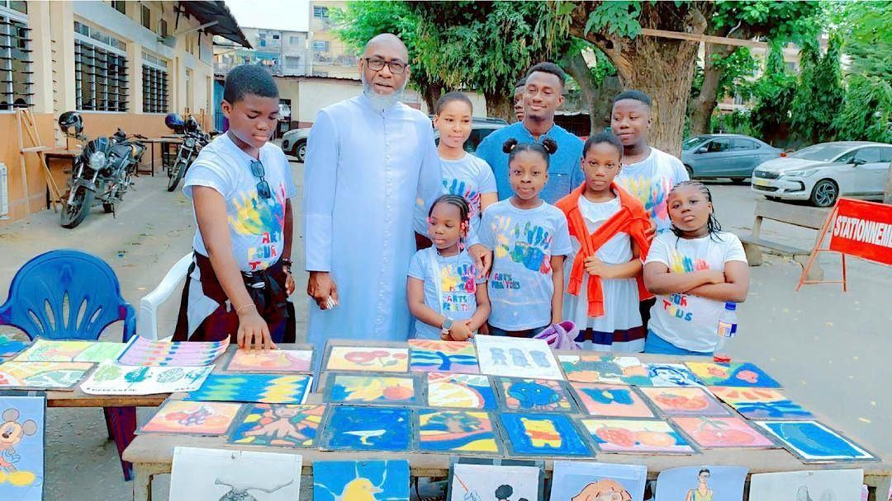
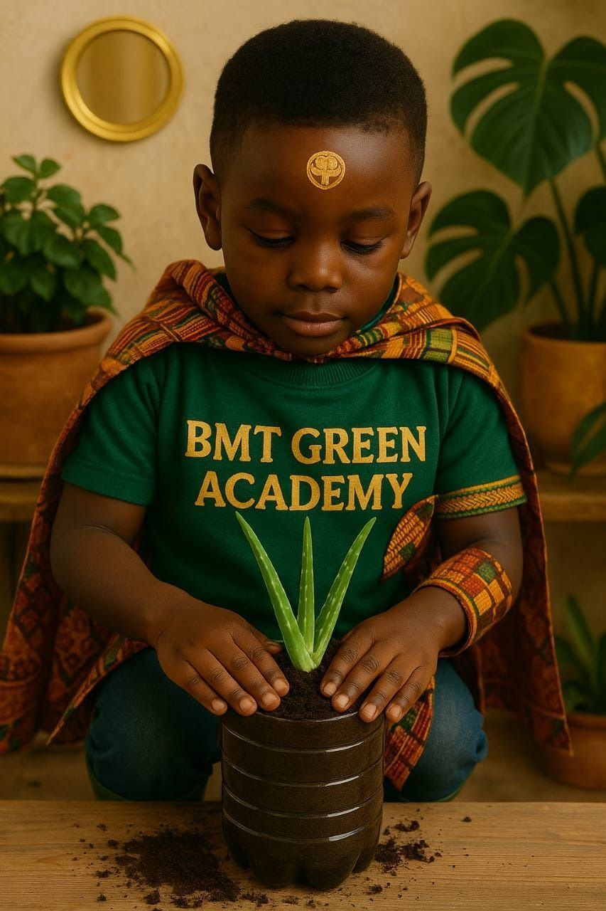
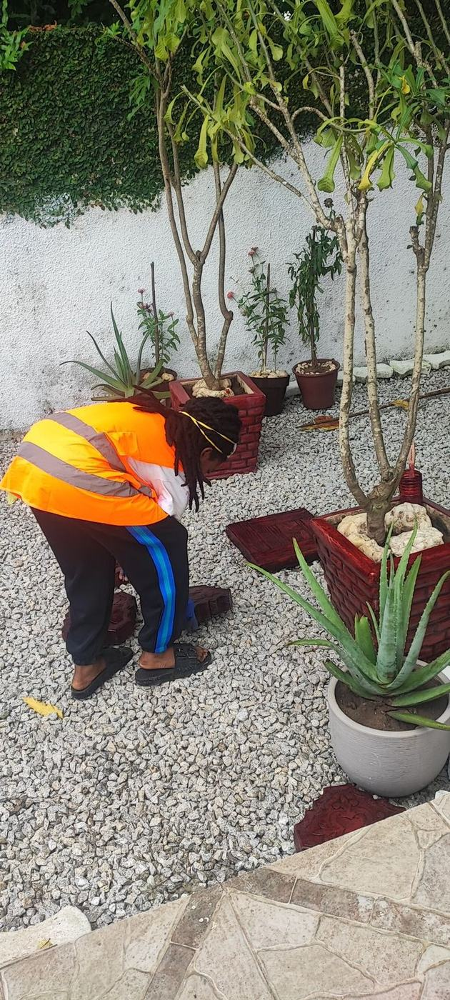
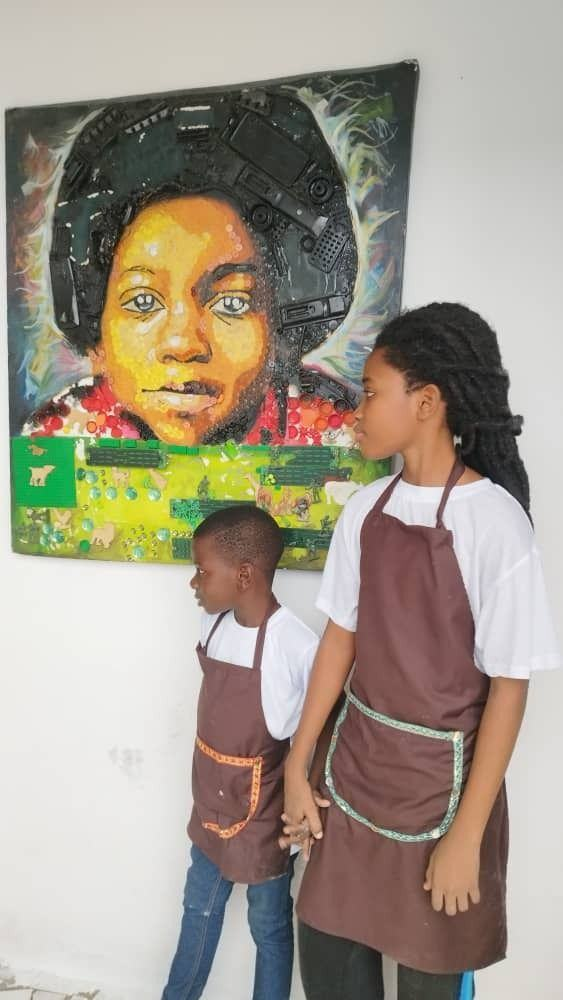
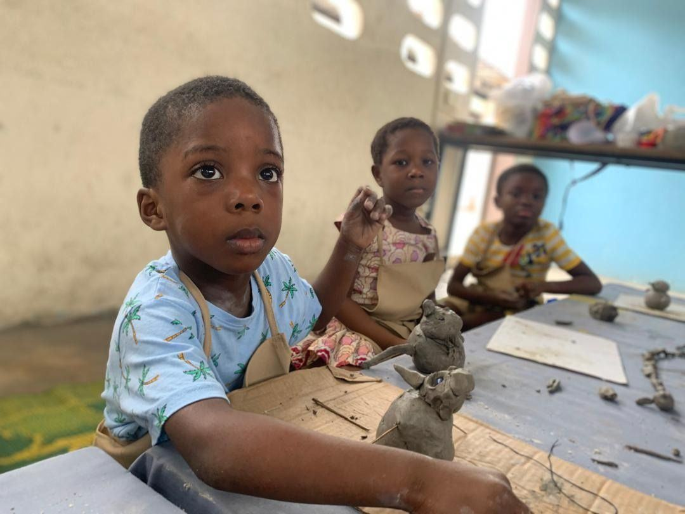
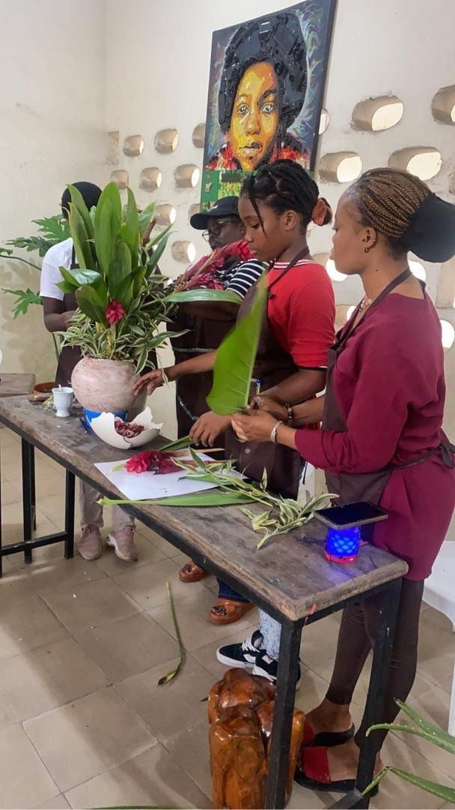
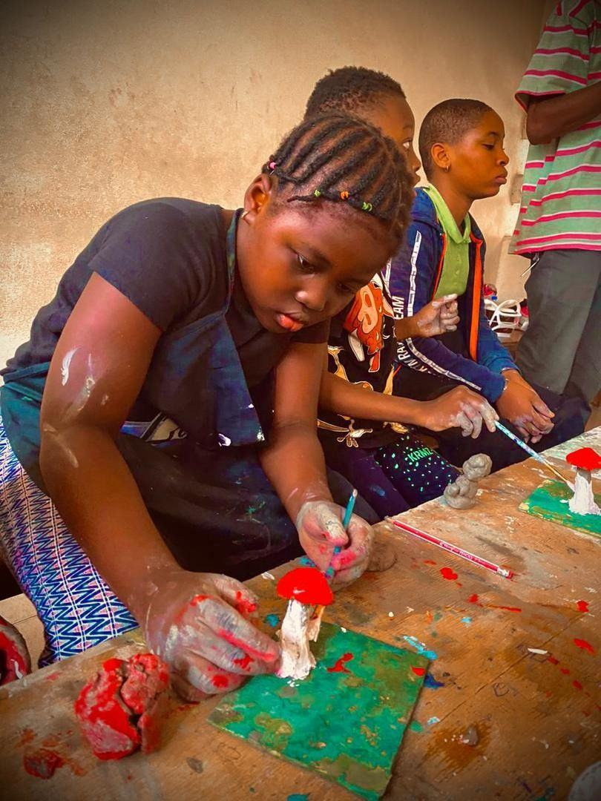
Inscrire un enfant
Écrivez-nous pour connaître les prochaines activités d'éco-art thérapie et de vacances.
Nous contacter sur WhatsApp

{kind=link}
{kind=link}
{kind=link}
{kind=link}
{kind=link}
{kind=link}
{kind=link}
{kind=link}
{kind=link}
{kind=link}
{kind=link}
{kind=link}